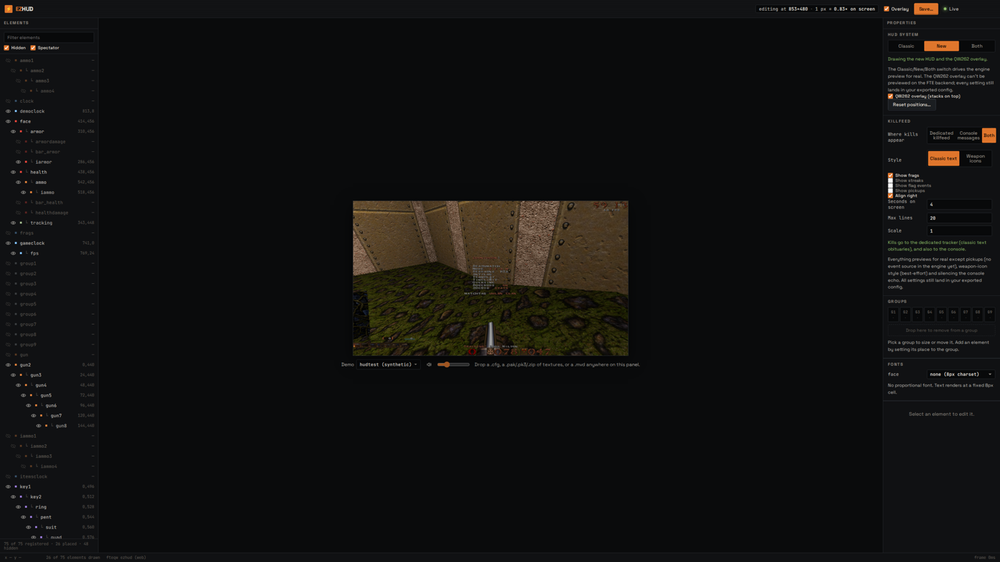
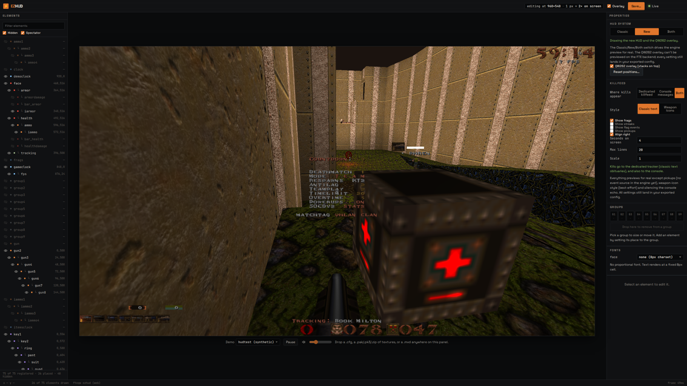
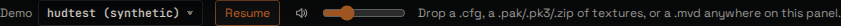
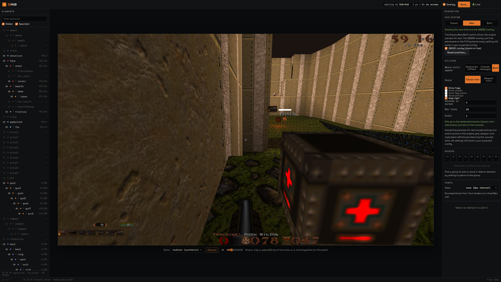

Epic #39, subissues #40–#43. Built by Sol (GPT-5.6-sol), specified and reviewed by Claude (Fable 5), 2026-08-04.
Release commit: df07436 on main (merged PRs #44,
#45, #46,
#47, #48).
Release 1 makes the geometric measurements the editor and its QA depend on honest, and ships the first piece of demo control built on them:
physical (the real backing-store pixels) next to the virtual console size, from one torn-read-safe snapshot.GET /log, request-id
correlation) and the 12-cell golden QA matrix that every claim below is measured with.User journey: open the editor, then enlarge the browser window.

63f54bf): the window is 2560×1440 but the
game canvas stays frozen at its 1280×720-boot size — header reads editing at 853×480 · 1px = 0.83×. The engine
never learns the window changed; QA's resize step silently measured nothing (ratio 1.0).
#canvas width limited by a frame
that shrink-wrapped the canvas); the frame is now viewport-sized. Note the new Pause button in the demo bar (#43).before /state (window 2560×1440): screen 853×480, physical [704, 396] ← frozen after /state (window 2560×1440): screen 960×540, physical [1920, 1080] ← follows
physical in the state exportBefore: the QA assertion failed with source /state.physical must be an array, got undefined
(RED log, red-41-physical/). After: physical is an integer pair equal to the canvas
backing store and moves with screen in the same snapshot (single GetVideoSize plugin call —
see after /state above). ezQuake backend unchanged (renderer.ScreenshotWidth/Height).
DYNAMIC_WIDTH = ['ping'] in tools/qa/invariants.mjs: proportionality and metamorphic judge ping
on x/y/h, never width; position drift still fails; every report carries exempt_width so reviewers see the
exemption was applied; extending the list requires naming the element in a PR (docs/TESTING.md).
Journey: press Pause next to the volume control → demo freezes (democlock pixels stop);
press Resume → it moves again. Type demo_setspeed 0 in the console instead → the button flips to
Resume on the next poll, because it renders engine state, never click state.


On a backend that does not report demo.cl_demospeed, the control renders disabled with a reason and logs one
warn-level session-log entry (tier-3F case). demo_setspeed is a percent on both engines
(0 pauses, 100 restores) — the protocol doc and allowlists say so explicitly, with negative tests for lookalikes and chaining.
12 cells: HUD system (newhud/classic) × killfeed style (classic/modern/separated) × resize (2560×1440 → 1920×1080 and
→ 1280×720, metamorphic there-and-back). Invariants per cell: non-vacuous (≥10 drawn), proportionality (measured ratio),
containment, alignment, metamorphic, cvar round-trip. Artifacts: tools/qa/artifacts/release1-final/.
| cell | verdict | drawn | measured ratio (x, y) | failures |
|---|---|---|---|---|
| newhud.classic.1440-1080 | PASS | 73 | 0.700, 0.700 | — |
| newhud.classic.1440-720 | PASS | 73 | 0.367, 0.370 | — |
| newhud.modern.1440-1080 | PASS | 73 | 0.700, 0.700 | — |
| newhud.modern.1440-720 | PASS | 73 | 0.367, 0.370 | — |
| newhud.separated.1440-1080 | PASS | 73 | 0.700, 0.700 | — |
| newhud.separated.1440-720 | PASS | 73 | 0.367, 0.370 | — |
| classic.* (all six) | FAIL (expected) | 0 | real ratios measured | non-vacuous only |
classic.* failures are the release definition working as designed: with
scr_newhud 0 no plugin elements draw, and the non-vacuous invariant refuses to bless geometry passes over an
empty set. The classic axis needs its own expectations (the engine's sbar is not a plugin element) — tracked as a
follow-up issue, see Known limitations.| gate | result | where |
|---|---|---|
| tier 1 — pure core + dist allowlist + asset freshness | PASS | CI + local |
| tier 2 — bridge client (JS) / engine security contract (C) | PASS / PASS | CI + local ezQuake build |
| tier 3 / 3F — view layer / FTE page vs fake engine | PASS / 13 of 13 | CI + local |
| tier 4 — native ezQuake end-to-end (GPU) | PASS | CI (self-hosted) |
| tier 4F — public dist end-to-end, 40 cases incl. 130-control coverage audit & pixel truth | 40 of 40 | fresh BASE_PATH=/ezHUD/ dist, run by builder and reviewer |
| QA selftest — fake engine, planted-fault drill | 12 of 12 + fault detected | npm run test:qa |
| QA matrix — real engine, 12 cells | 6 of 6 newhud PASS; 6 classic fail non-vacuous only (expected) | tools/qa/artifacts/release1-final/ |
TDD receipts (observed-failing before implementation): tools/qa/artifacts/red-40-pre/,
red-40-css/, red-41-physical/, red-43-demo-pause/; green twins beside them.
classic.* matrix axis has no expectations of its own yet (sbar is engine-drawn, not a plugin element) — follow-up issue filed.cl.time: the gameclock keeps ticking while paused (engine behaviour, documented in the spec and tests).